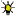
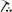

Museo Arte Contemporanea Sotto Sale
Useful Information
| Location: |
Via del Salgemma, 90026 Petralia Soprana PA.
E90 exit Casello di Pollina - Castelbuono, SS286 south 26,5 km, right on SS120 towards Petralia, in Bivio Madonuzza, turn left and left again. A19 exit Irosa, SP138/SP11/SP290 towards Petralia, in Bivio Madonnuzza turn right. Take Via del Salgemma, follow signs for the Museum. (37.7945, 14.13777) |
| Open: |
Booking mandatory. [2024] |
| Fee: |
Adults EUR 10, Children (12-18) EUR 8, Disabled free. [2024] |
| Classification: | Underground Museum Salt Mine |
| Light: | Electric Light |
| Dimension: | L=80 km. |
| Guided tours: | D=1 h, L=400 m, MinAge=12. V=15,000/a. |
| Photography: | allowed, no tripods or selfie sticks |
| Accessibility: | no |
| Bibliography: | |
| Address: |
Museo Arte Contemporanea Sotto Sale, Via del Salgemma, 90026 Petralia Soprana PA, Tel: +39-366-387-8751.
E-mail: |
| As far as we know this information was accurate when it was published (see years in brackets), but may have changed since then. Please check rates and details directly with the companies in question if you need more recent info. |
|
History
| 1950s | salt mine opened. |
| 2011 | a disused mine tunnel in the salt mine is transformen into an underground art museum. |
Geology
The salt deposit is a result of the Messinian Salinity Crisis. The connection to the Atlantic ocean at Gibraltar was blocked and the Mediterranean dried up. The remains were salty like the Dead Sea, and further evaporation deposited thick layers of rock salt. The salt was covered by impermeable layers, so it was not dissolved when the water returned. Later it was uplifted to its current position, a result of the convergent plate rim which runs through Sicily.
Description
Museo Arte Contemporanea Sotto Sale (MACSS, Contemporary Art Museum SottoSale) is an underground art museum inside a former salt mine. We were not sure how to classify this, as it is inside a mine with an underground visit, but actually it is an art museum. And the museum is quite special, as it contains modern art, sculptures which were made of salt. That’s actually the reason why they are stored at a salt mine: salt is hygroscopic, sculptures made from salt would condense humidity from the air and after some time the sculpture would be dissolved. A small pool of saltwater would be all that remains. But salt mines have absolutely no humidity, the surrounding salt has already taken care of that. Forty works, the result of 6 biennials (2011-2023), are the core of the exhibition.
The museum is located in the Italkali Salt Mine in Raffo, in the mountains in the southeastern corner of the Parco delle Madonie. The guided tour includes the topics art museum, the salt mining operation and the geology of the site. The tours are guided by the Sottosale Association, and they are free for local residents and employees of ITALKALI SpA. Visitors are equipped with a helmet. As this is an operating mine, visitors have to sign a waiver and have to avoid the production areas of the Italkali mine.
The salt in this area was mined since Roman times. Modern mining in Raffo began in the 1950s, the mine is now 200 metres deep and has 13 mining levels. The museum is located on the second level, in the disused Galleria 3 tunnel.
The initiators of this innovative museum are Enzo Rinaldi, an artist and sculptor from Petralia Soprana, and Fabrizio Garghetti, a photographer from Milano. They visited the mine in 2011 and had the idea to create sculptures from salt. The material is quite special, translucent, normally white but sometimes even colourful. But the material is also brittle, and it may crumble, just before the sculpture is completed. They were able to organize biennial exhibitions which were organized and financed by the associations SottoSale and Arte e Memoria del Territorio in collaboration with the Italkali company. The artistic director was the art historian Alba Romano Pace. Unlike other initiatives, this museum and the biennale event are not supported by the government.
The visit of this museum is quite spectacular, but there are three major obstacles. The first is, that it is located in a very remote and mountainous area, you should plan at least an hour drive for 50 km. The second is, that Google Maps is known for having numerous flaws in this area. So if you do not want to drive single lane dirt roads, you should think about using a road map. And the third obstacle is how to get into the mine, as it actually has no open hours except during the Biennale. Reservation by phone or email is mandatory. There are only four days per month when tours are offered. This is definitely a visit which you might want to plan from home and plan your trip itinerary around. This is a little strenuous, but we think this site is worth the effort.
- See also
- Search DuckDuckGo for "Museo Arte Contemporanea Sotto Sale"
- Google Earth Placemark
- OpenStreetMap
- Contemporary Art Museum SottoSale, official website (visited: 30-JUN-2024)
- Petralia Soprana and the Macss: contemporary art as you’ve never seen it before. (visited: 30-JUN-2024)
- Alla scoperta della miniera dove il sale diventa arte (visited: 27-JUN-2024)
- Museo di arte contemporanea Sotto Sale (visited: 30-JUN-2024)